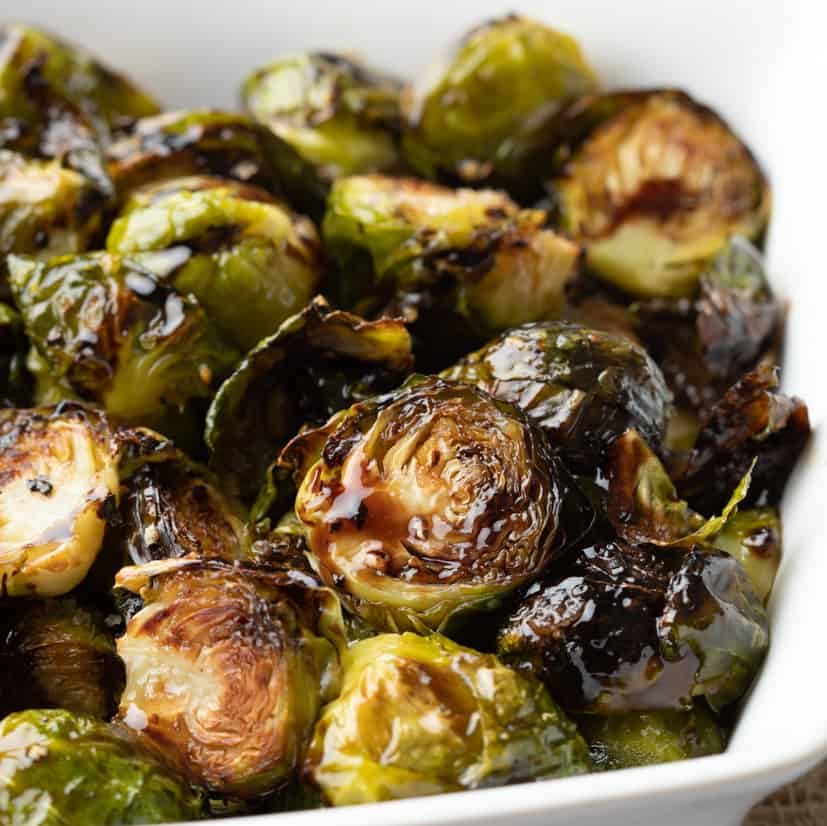

Roasted Brussel Sprouts
Ingredients
-
Brussel Sprouts
-
Neutral Oil (Canola, Grapeseed, etc...)
-
Salt
-
Pepper
Instructions
-
Heat oven to 325 F and place sheetpan into oven
-
Cut brussel spout into halves
-
Toss brussel sprouts in oil and season with salt and pepper
-
Take pan out of oven and place brussel sprouts cut side facing down onto sheet pan
-
Place pan back into oven and wait 20 - 30 minutes
-
Remove from oven and serve.
Back to Homepage